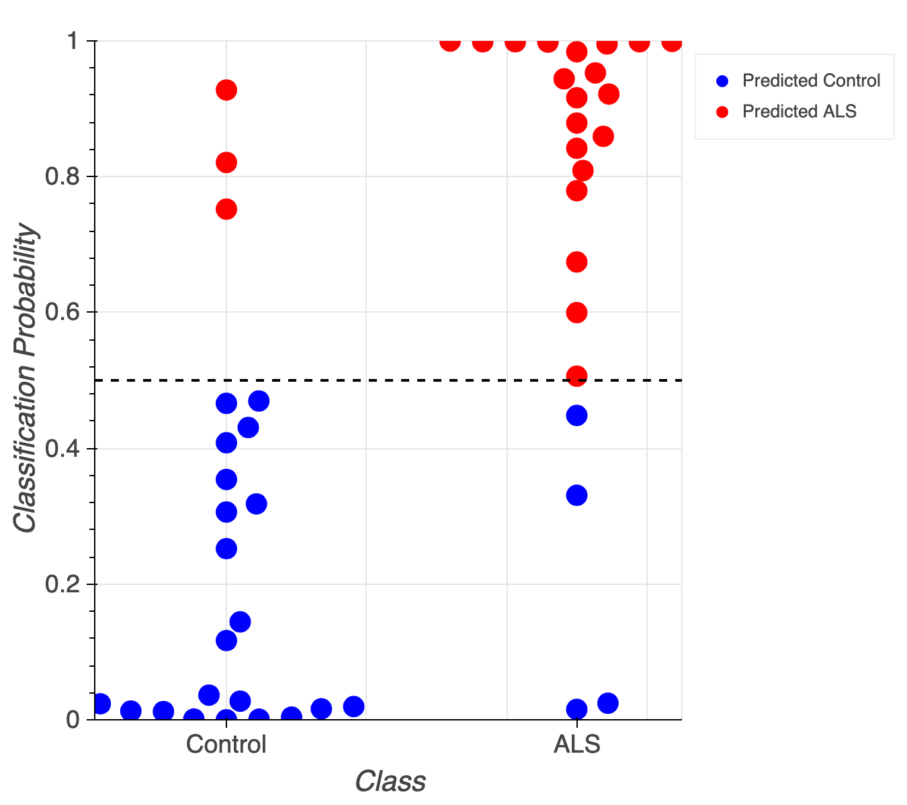
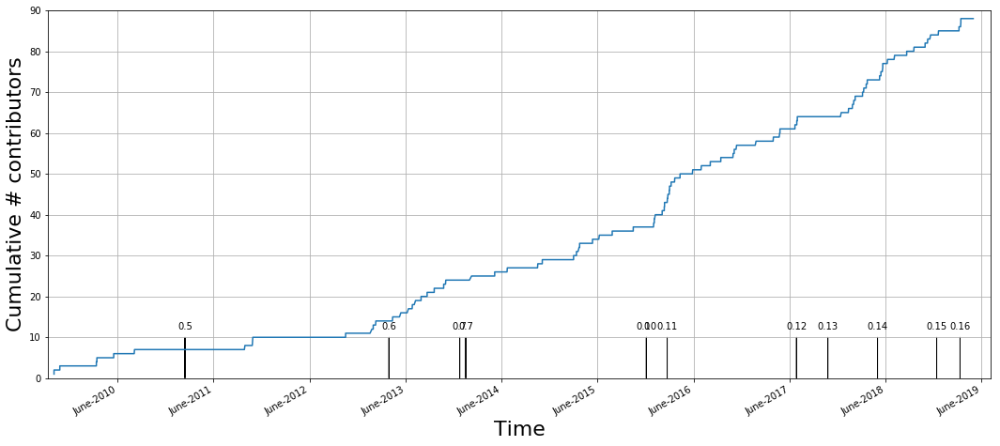

The era of brain observatories
Opportunities and challenges for data-driven neuroscience
May 16th, 2019
Halıcıoğlu Data Science Institute
UC San Diego
Ariel Rokem, University of Washington eScience Institute
Follow along at:


Data science training
Development of tools and practices for reproducible research
Building a data science community: open, rigorous and ethical
Data-driven research
Normal behavior is supported by brain networks

Brain networks

Not just static cables!
Brain connections develop and mature with age
Individual differences account for differences in behaviour
Adapt and change with learning


Observatory-driven science
 By Donald Pelletier
[
By Donald Pelletier
[ By
By The era of brain observatories
Allen Institute for Brain Science
Human Connectome Project (HCP), N = ~1,200
Pediatric Imaging Neurocognition and Genetics (PING),
N = >1,000
Healthy Brain Network (HBN), N = ~10,000
Adolescent Brain Cognitive Development (ABCD), N = ~10,000
UK Biobank, N = ~500,000
Opportunities
New data sets will enable important new discoveries
Data-driven discovery
Challenges
Standard research procedures do not apply at large scale
Statistical approaches struggle to model high-dimensional data
Recovering structure requires extensive exploration
Sociotechnical structures are strained
→ Train machine learning algorithms to process massive datasets
→ Develop models that harness high-dimensional complexity
→ Develop applications for exploratory data analysis and data sharing
→ Open-source software as a basis for data science collaboration and training
Challenge: Methods that work in standard datasets may fail in Big Data
Some methods require expert examination
Time consuming, tedious
→ Do not scale well!
The solution
Expert → results
Expert → training data → machine learning → results
Learning from experts

Aaron Lee
(UW Ophthalmology)

Sa Xiao
(UW Ophthalmology → Google)
Optical Coherence Tomography (OCT)
High-fidelity in vivo measurements of retinal structure at micron resolutionThe UW OCT/EMR data-base
10 years (2006-2016)
9,285 patients
43,328 OCT volumes
2.64 million OCT images
2.5 TB of data
Linked to EPIC electronic medical records
For each OCT we know:
Visual acuity
OCT interpretation
Diagnosis
Treatment determinations
In some cases - longitudinal measurements
Artificial neural networks
A family of machine learning algorithms
Biologically inspired

Minsky and Papert (1969)
A cascade of linear/non-linear operations

Convolutional networks
Inspired by the visual system
Capitalize on spatial correlations in images


Deep learning accurately classifies age-related macular degeneration (AMD)
Patient-level AUC = 0.97 (Lee et al., 2016)
Could a network learn to identify clinically-relevant features?

Fully convolutional networks
Take an image as input and produce an image as output
Detecting clinical features: intraretinal fluid segmentation
Detecting clinical features: intraretinal fluid segmentation
Detecting clinical features: intraretinal fluid segmentation
Segmenting experimental data:
oxygen induced retinopathy

Retinal segmentation
Segmenting experimental data:
oxygen induced retinopathy

The vaso-obliteration zone
Segmenting experimental data:
oxygen induced retinopathy

The neovascular tufts
The solution
Expert → results
Expert → training data → machine learning → results
But: for many tasks, not enough training data
→ Amplify labeled data-sets with citizen science
Expert → citizen science → training data → machine learning → results
Scaling expertise with citizen science

Anisha Keshavan
(UW eScience → Child Mind Institute)

Jason Yeatman
(UW ILABS)
Example
Quality control of T1-weighted images


https://braindr.us

Braindr
Are you at work but feel like playing Tinder? Why not play braindr (https://t.co/yXw191Q7Hy) instead, and help neuroscientists rate the quality of brain images? Swipe left to fail bad quality images! Built with @vuejs and @Firebase #citizenscience pic.twitter.com/tpI9Y3UKOb
— anisha (@akeshavan_) February 7, 2018
Multiple ratings per image

But often, no agreement

Aggregating across raters
XGBoost (Chen & Guestrin, 2016)
Aggregating across raters

Aggregating across raters

Aggregating across raters

How do we scale this up?
Train a neural network on citizen scientist ratings
Transfer learning with VGG16/ImageNet

Neural network matches expert performances

Does it matter?

Democratizing citizen science

Democratizing citizen science

Swipes for Science


Beyond labeled data
Discovering subtle relationships between different images of the same objectOCT → OCTA

OCT → OCTA

MRI → MRI
Application: cross-modal image registration

What is being encoded by the network?
Using machine learning to understand brain function
Accurately predict individual variability
Expose important biological features
Tractometry measures the physical properties of brain connections
Diffusion MRI
Diffusion MRI
Diffusion MRI
Diffusion statistics


The 3D structure of each brain is unique
Tracts provide the anatomically correct coordinate frame
The 3D structure of each brain is unique

Tractometry is feature engineering
Amyotrophic Lateral Sclerosis (ALS)

Challenges:
Mass univariate analysis: reduced statistical power
Focus on a region of interest: lose the entire picture
Model individual differences using machine learning

Adam Richie-Halford

Noah Simon
Jason Yeatman
Diffusion MRI as a set of linear equations

Brain age

Linear regression

The objective:

But in our case p (number of variables) >> n (number of subjects)
Regularization: the Lasso

{kind=link}
{kind=link}
Diffusion MRI data has group structure
The Group Lasso
Where l are groups of variables
p(l) is the number of variables in group l
In our case: all the measurements of a tissue propetry within a tract
Enforces selection of groups
But does not enforce L1 sparsity within included groups
Sparse Group Lasso
Enforces sparsity both at the group level and the within-group level
Subsumes the Lasso (λ1 = 0)
And the Group Lasso (λ2 = 0)
But more meta-parameters
→ Nested cross validation + hyperoptimization
Brain age

MAE: 4.2 years (+/- 2.7 years)
Multiple biological processes in aging

Classification: logistic regression

Accurately classifies patients/controls
Classification accuracy of 84% (+/- 1%)
AUC of 0.91 (+/- 0.01)
Biological cause of ALS is localized

Summary
Sparse Group Lasso capitalizes on brain structure
Prediction of continuous measures
(e.g, "brain age", reading skills)
Classification of different states (patient/control)
Correctly identifies sparse biological causes
Future applications
Healthy Brain Network dataset
ABCD dataset
"A data science toolbox to study human connectomes"
Multi-region, multi-neuron recordings
Neurons → features
Brain regions → groups
Trials → observations
Group structure in multi-neuron recordings

Group structure in multi-neuron recordings

Group structure in multi-neuron recordings

Challenges
Methods that work in standard use may not apply to large datasets
→ Train machine learning algorithms to replace expert decision making
Interpretable methods are needed to extract information from complex high-dimensional data
→ Develop statistical techniques that reduce and harness this complexity
Tools are needed for data exploration and transparent sharing of results
→ Build browser-based applications for exploratory data analysis and data sharing
Challenge: tools for exploration of complex data
Results from large datasets are hard to understand
Hard to communicate
Hard to reproduce
Data sharing is not incentivized and is not easy enough
Challenge: tools for exploration of complex data
Jason Yeatman
(UW ILABS)
Adam Richie-Halford
(UW eScience)

Josh Smith
(UW eScience)
Anisha Keshavan
(UW eScience →
Child Mind Institute)
A browser-based tool for visualization and analysis of diffusion MRI data
A web-based application
Leverages modern visualization frameworks
Builds a web-site for a diffusion MRI dataset
Automatically uploads the website to Github
https://yeatmanlab.github.io/Sarica_2017
Exploratory data analysis
Enhances published results
Linked visualizations facilitate easy exploration
Enables new discoveries in old datasets
Automatic data sharing

Further exploration
Summary
Exploratory data analysis
Automated data sharing
Dimensionality reduced data in tidy table format
Facilitates interdisciplinary collaboration
Challenges
Methods that work in standard use may not apply to large datasets
→ Train machine learning algorithms to replace expert decision making
Algorithms are needed to extract information from complex high-dimensional data
→ Translate statistical techniques into practice in neuroscience
Tools are needed for data exploration and transparent sharing of results
→ Build browser-based applications for exploratory data analysis and data sharing
Sociotechnical structures are strained: collaboration, publication, training
→ Open source software collaborations and science-focused hack weeks
Open source software is a necessary complement to brain observatories
Required for reproducibility
Enables building on previous work
Open-source software and reproducibility


https://github.com/uw-biomedical-ml/irf-segmenter
https://github.com/uw-biomedicasl-ml/oir
https://github.com/uw-biomedical-ml/mri2mri
Braindr + Swipes for Science:
https://github.com/akeshavan/braindr-analysis https://github.com/swipesforscience
Sparse Group Lasso:
https://github.com/richford/AFQ-Insight
AFQ-Browser:
https://github.com/yeatmanlab/pyAFQ
https://github.com/yeatmanlab/AFQ-Browser
Community-developed open-source software
Open to users

Open to contributors
Open to contributors

Distributed collaboration

How can we get more people involved?
Methods in data science are rapidly changing
Learning often require substantial hands-on experience
Hack weeks
Week-long events
Combination of learning and project work
A fine balance of pedagogy and hacking

Neurohackademy
A Summer Institute in Neuroscience and Data Science
A data science agenda for neuroscience
Machine learning methods for biomedical imaging
Scale up to meet the demands of large datasets
Use citizen science to solve the training data dilemma
Machine learning and statistical learning
Develop methods that are both accurate
And discover important biological features
Computational infrastructure for data-driven science
Building open-source software
Fostering an open-source community
Thanks!
Aaron Lee
Anisha Keshavan
Jason Yeatman
Adam Richie-Halford
Josh Smith
Noah Simon
Eleftherios Garyfallidis (IU)
Tal Yarkoni (UT Austin)
Daniela Huppenkothen
Anthony Arendt

Contact information